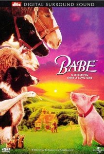
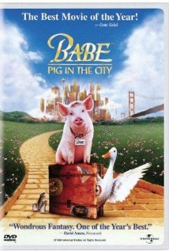

Trama dei film
Salta al secondo filmBabe ‒ Maialino coraggioso (1995)
Arrivato alla fattoria dei coniugi Arthur ed Esmé Hoggett come futura vittima per il pranzo di Natale, Babe, un porcellino Yorkhshire, deve vedersela con le ferree regole imposte da Rex, il cane pastore, secondo il quale solo i cani sono animali intelligenti.
Per fortuna Fly, la compagna di Rex, fa da madre a Babe, che inizia a fare amicizia con gli ospiti della fattoria, tra cui spicca l'eccentrico papero Ferdinand, che studia di imitare il canto del gallo per rendersi utile ed evitare di finire in pentola.
L'arrivo di una sveglia meccanica spaventa il pennuto che decide di rubarla col maldestro aiuto di Babe. Non solo svegliano Duchessa, la viziatissima gatta persiana di casa Hoggett, ma mettono a soqquadro la casa rovesciando barattoli di vernice per gli addobbi festivi. Frattanto Fly è triste perché le hanno venduto i cuccioli e Babe la consola chiamandola mamma.
Scampato, come vittima, al cenone natalizio, Babe seguendo Ferdinand scopre il recinto delle pecore e sventa in parte il furto del gregge. Frattanto Arthur Hoggett sobbalza quando alla tosatura delle pecore queste seguono docilmente Babe, che parlando loro cortesemente ne conquista la fiducia.
Rex, geloso, litiga con Fly, morde il padrone e viene incatenato mentre Babe sventa addirittura un attacco di cani randagi al gregge, che causano la morte di Maa, la più saggia e anziana fra tutte le pecore. Esmé Hoggett equivoca sulle macchie di sangue sul muso della bestiola e vuole sopprimerla, ma Fly, saputa la verità, riesce salvare la vita al porcellino che, ormai entrato nelle simpatie del fattore, viene ammesso in casa come animale domestico.
Duchessa, estromessa per colpa sua, si vendica rivelandogli la cruda sorte dei maiali, e Babe fa lo sciopero della fame, con grande disperazione di Arthur Hoggett, ormai affezionatosi al maialino e sempre più stupito del suo prodigioso talento come "maiale da pastore".
Alla grande gara, riservata annualmente ai cani da pastore, superato lo sconcerto della giuria, Babe deve affrontare l'ostracismo delle pecore. Tuttavia usando la parola d'ordine della specie, ottenuta da Rex patteggiando col suo gregge, riesce a superare la prova fornendo la migliore esibizione e suscitando l'entusiasmo del pubblico e la gioia del padrone.
Torna suBabe va in città (1998)
Concluse tutte le peripezie che lo hanno tenuto a lungo impegnato, Babe fa ritorno alla fattoria degli Hoggett. L'entusiasmo con cui Babe vuole stare al fianco del suo capo mentre questi è impegnato a riparare il pozzo della fattoria provoca un incidente che costringe il fattore a letto con un'ingessatura.
I lavori nei campi si fermano e subito arrivano gli esattori della banca che esigono la riscossione dell'ipoteca che grava sulla fattoria. L'unica speranza che rimane alla signora Hoggett per salvare la proprietà è quella di esibire ad una fiera, in cambio di un compenso, il maialino guardiano di pecore.
Contrariato, Babe segue la decisione della padrona, insieme arrivano in città, ma qui le cose non vanno come previsto. L'esibizione alla fiera non può avere luogo e, senza punti di riferimento, la signora Hoggett e Babe trovano alloggio in uno strano albergo, l'hotel Pulcilandia, dove l'unico ospite umano è l'ex clown Fugly Floom, zio della proprietaria.
Babe intanto fa amicizia con altri animaletti:
- due cani di razza border collie,
- una scimmia cappuccina,
- un mastino napoletano,
- un bulldog,
- un gatto persiano blu,
- un'oca Indian Runner
- due pecore di razza Leicester,
- l'orangotango Thelonius,
- alcuni scimpanzé (Bob, Tesoro e Sciccoso),
- dei topi canterini.
Dopo varie peripezie, la signora Hoggett viene arrestata, e l'albergo deve essere chiuso. Gli animaletti, affamati, cercano di organizzare una difesa e i loro sforzi, alla fine, sono premiati. La signora Hoggett viene assolta e liberata mentre l'hotel Pulcilandia viene rilevato e ricostruito.
Con i soldi ricavati il signor Hoggett, ormai guarito, riesce a pagare i propri debiti. L'orango rimane alla fattoria, gli altri animaletti trovano sistemazione. Arthur Hoggett fa arrivare di nuovo l'acqua ai campi sistemando finalmente il pozzo. Il lavoro riprende e il padrone ringrazia Babe che, ancora una volta, ha salvato la situazione.
Torna su